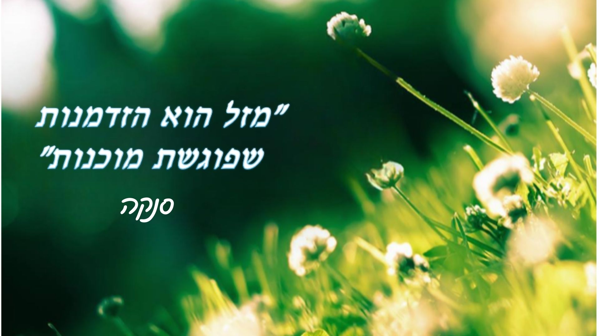

מרגישים תקועים?
- ➤ מרגישים שהמצב הרגשי שלכם משתנה ללא שליטה?
- ➤ מתקשים לשמור על איזון בחיי היומיום?
- ➤ מחשבות טורדניות לא מרפות?
- ➤ מרגישים מוצפים רגשית?
- ➤ מתמודדים עם משבר שמקשה עליכם להמשיך הלאה?
אם אחד מהדברים האלה מוכר לכם, דעו שאתם לא לבד.
אפשר לשנות דפוסים וליצור איזון חדש בחיים –
אני כאן בשבילכם 💛